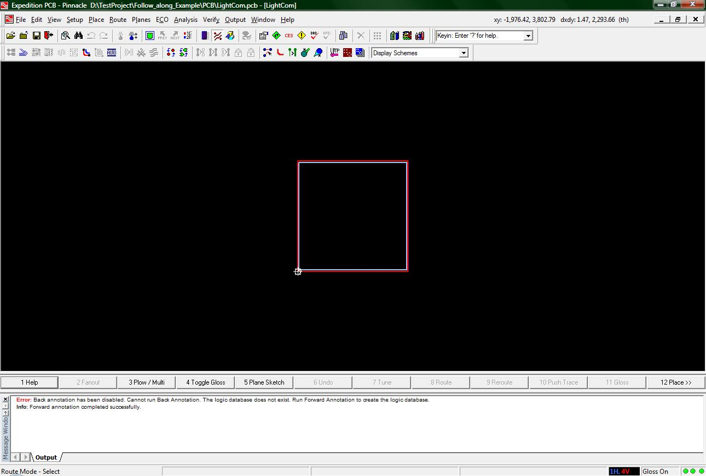
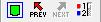
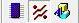
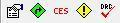

DxDesigner to Expedition PCB: Part
2: Expedition PCB
Intro:
As implied by the name of this tutorial we are going to do a brief introduction to the interface for Expedition PCB.
The following image shows how Expedition PCB will look after a forward annotation.

(1-start.jpg)
Of the many things that you will need to be familiar with, the buttons and the menus are first and foremost. Lets start with some of the buttons.
The following image shows the three buttons for modifying how you view your board.

(2-view_buttons.jpg)
The button on the left is the button for “Fit Board”. This will center your view on the entire board you have created so far (or if you have not created a board it will center on the red box supposedly the outline for your board).
The two buttons in the middle are for moving back and forth between various different views. The "prev" button is for cycling through views you have had before and the "next" button is for when you have used the previous button.
The last button is for the Display Control window. This window will allow you to customize what items get displayed for your “viewing pleasure”.
The next three buttons will not change how you view your board, but the mode of operation.

(3-view_mode_buttons.jpg)
The first button on the left is for “Place Mode”. While in this mode you will be able to move, remove, and place all parts.
The middle button is for “Route Mode”. While in this mode, you will be able to make more permanent connections between parts. You might find, if you do not have a highly complex design, that you will not have to be in this mode for very long. The auto-route feature should do everything you will need to do in the route mode.
The right button is for “Draw Mode”. In this mode you will be able to add text or even add a logo to your board. This mode is only useful for adding additional information to your board. You should only use this mode after you have finished placing and routing your chips on the board.
A small note is that you must be in one of the three above modes of operation while running Expedition PCB. In addition, since the functionality of each mode varies significantly, Expedition PCB changes the interface to incorporate buttons that are useful for that mode. For example, if you are in Route Mode, you will find that the bottom row of buttons will contain a button for plowing (term for making the traces between parts) as well as a button for auto routing. While in the Place Mode, you will find a button to open up the place menu as well as buttons to change the orientation of a part.
The following are the last five buttons I want to introduce to you.

(4-function_buttons.jpg)
The leftmost button is the Properties button. This will open the properties window where information about parts and text will be displayed.
The button second from the left is the Editor Control button. This is similar to the project settings button from DxDesigner as there are many different aspects that can be customized in Expedition PCB.
The third button from the left is the Constraints Editor System. When opened, the CES window allows the user to specify what conditions, hereafter called constraints, that make your board correct. You will not need to use the CES very much as your instructor should provide you with a file with all the constraints you will need. This means you will only run the CES once to load those constraints and, after that, very limited interaction with the CES will be required.
The fourth button from the left is the Review Hazards button. This opens up a window that will display any hazards still existing in your design after the design has been compiled. In addition to viewing hazards, you will also be able to view the lengths and possible delays of each of your nets. While viewing the lengths of your nets, that information will automatically update, whereas if you fix an errror detected by the DRC you will need to run the Batch DRC again. More is written about the Review Hazards window in the Analysis menu tutorial.
The fifth, and last, button from the left is the Batch DRC button. When pressed, a window will pop up which will allow you to compare your design to the rules that have been specified for your project in the CES as well some settings specified in that window. More on the Batch DRC on the Analysis menu tutorial.
There are many other buttons to the standard Expedition PCB interface, but the previously described buttons are by far the most useful.
Now that the buttons have been introduced, there are a few menus you will need to be familiar with. Click on the name of the menu to open up a tutorial for that menu.